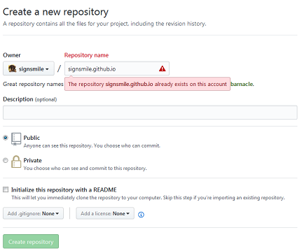

Atom飞行手册的飞行手册
Mon 25 December 2017
通读了一遍Atom飞行手册的第一章快速入门以及第二章使用Atom，做了简单笔记，方便以后查阅。
命令面板
Atom的操作方式是以命令为基础的，不管是菜单功能还是内置的一些快捷键本质上都是执行Atom命令。而命令面板可以直接去执行Atom具备的所有命令，包括但不限于菜单栏上的功能以及快捷键的功能。打开命令面板的方式为快捷键 cmd-shift-p，在命令面板上带搜索功能的框中可以输入键字即可搜索到相应命令，点击鼠标左键或者按下回车就可以执行命令。
如下图就是打开atom设置界面的命令:
 当然也可以根据右侧的提示用快捷键
当然也可以根据右侧的提示用快捷键Ctrl+,来打开
设置界面
既然已经打开了设置界面，那就简单说说设置界面中一些有意思的
Core Settings
核心设置，保持默认就行
- Allow pending Pane Items //这个功能很有意思，它能让你在单击一个文件的时候不完全打开它，只是生成一个预览界面，会自动被后面打开的文件给替换。但是如果双击打开或者在预览界面编辑它，它就会在tab上面常驻，需要手动关闭。这在手工查找文件内容的时候很实用
- Auto Hide Menu Bar //自动隐藏菜单栏，屏幕小的话可以选上，按下alt键就会出来了
- File Encoding //Atom的默认编码方式是utf8, 很奇怪这个设置是放在这里而不是Core Settings里面
Edit Settings
可以设置字体，行高，默认行宽等
- Atomic Soft Tabs //行前tab长度的空格也当做tab来处理
- Show Invisibles //显示回车、空格、tab这些特殊字符，便于编辑Python等对空格敏感的语言
- Scroll Past End //文档末尾是否可以继续往上拉，对于在编辑时需要按很多回车强迫文章末尾上拉的我来说很有用。
- Show Cursor On Selection //不喜欢选上以后后面还有一个光标在闪啊闪，所以取消选择了。
- Show Indent Guide //缩进指示符，写python代码很有用的
- Show Line Numbers //显示行号
- Tab Type //tab类型，auto为自动检测，soft为用空格代替tab，hard为tab原始输入
- Soft Tabs //Tab Type设置成auto时，当系统无法检测到文档所用tab类型时，默认用空格代替tab
- Tab Length //tab键的宽度，默认是2，个人习惯是4，一般建议html设成2
- Soft Wrap At Prefered Line Length //单行长度超过设置值时就自动换行，如果是写代码的话就不要选了，应该主动做到行宽不超过设置长度，如果是写文章的话就可以选一下，以方便查看。
System Settings
下面的几个设置都挺有用的可以都选上
- Register as file handler //在打开方式中增加Atom
- Show in file context menus //可以右击用Atom打开文件
- Show in folder context menus //可以右击用Atom打开文件夹
Keybindings
这里可以查看所有的快捷方式，可以在keymap.cson文件中重定义这些
格式如下
'atom-text-editor':
'enter': 'editor:newline'
'atom-workspace':
'ctrl-shift-p': 'core:move-up'
'ctrl-p': 'core:move-down'
Packages & Themes
包和主题的管理
Atom的所有功能都是由包来实现的，所有已经按照的包列在包的设置界面中，可以在这里卸载包，设置单个包的属性等
Atom的主题也可以自由定制，在这个页面可以选择以及设置主题，个人喜欢UI Theme:OneLight 以及Syntax Theme:Solarized Right。
install
安装
如果想要安装包或者新的主题，可以在这里搜索并且安装。
常用快捷键&命令
罗列下常用的一些快捷键及命令
| 快捷键 | 命令 | 注释 |
|---|---|---|
| ctrl-\ | tree-view:toggle | 隐藏或重新显示目录树 |
| ctrl-0 | 可以将焦点切换到目录树 | |
| ctrl-shift-o | 打开目录 | |
| ctrl-T | fuzzy-finder:toggle-file-finder | 打卡项目中的文件 |
| ctrl-B | fuzzy-finder:toggle-buffer-finder | 查找已经打开的 |
| ctrl-shift-B | fuzzy-finder:toggle-git-status-finder | 只查找从上次 Git 提交之后修改过或新增的文件 |
| ctrl-left | editor:move-to-beginning-of-word | 光标移到词首 |
| ctrl-right | editor:move-to-end-of-word | 光标移到词尾 |
| home | editor:move-to-first-character-of-line | 移到行首 |
| end | editor:move-to-end-of-screen-line | 移到行尾 |
| ctrl-home | core:move-to-top | 移到页首 |
| ctrl-end | core:move-to-bottom | 移到页尾 |
| ctrl-g | go-to-line:toggle | 跳到指定行，或者跳到指定行的指定位置（row:column） |
| Alt+Ctrl+F2 | 标记或者取消标记书签 | |
| F2 | 跳到下一个标签 | |
| Shift+F2 | 跳到上一个标签 | |
| Ctrl+F2 | 标签列表 | |
| Shift+Up | 向上选择 | |
| Shift+Down | 向下选择 | |
| Shift+Left | 向左选择 | |
| Shift+Right | 向右选择 | |
| Ctrl+Shift+Left | 选择到单词首 | |
| Ctrl+Shift+Right | 选择到单词尾 | |
| Shift+Home | 选择到行首 | |
| Shift+End | 选择到行末 | |
| Ctrl+Shift+Home | 选择到页首 | |
| Ctrl+Shift+End | 选择到页尾 | |
| Ctrl+A | 全部选择 | |
| Ctrl+L | 选择整行 | |
| Ctrl+J | 合并下一行与当前行 | |
| Ctrl+Up/Down | 整行上移或者下移 | |
| Ctrl+Shift+D | 复制当前行并贴在下行 | |
| Ctrl+K Ctrl+U | 全部转为大写字母 | |
| Ctrl+K Ctrl+L | 全部转为小写字母 | |
| Ctrl+Shift+K | 删除当前行_（容易与搜狐输入法弹出软键盘的快捷方式冲突）_ | |
| Ctrl+Backspace | 删除到词首 | |
| Ctrl+Delete | 删除到词首 | |
| Ctrl+Click | 在所点击位置增加光标 | |
| Alt+Ctrl+Up/Down | 在上面或者下面增加光标 | |
| Ctrl+D | 选中下一个与当前选择相同的内容 | |
| Alt+F3 | 选中所有与当前选择相同的内容 | |
| --- | Convert Spaces to Tabs | 将制表符长度空格转换为制表符 |
| --- | Convert Tabs to Spaces | 将所有制表符转换为等长空格 |
| Ctrl+M | 跳到光标附近括号对应的括号上，如果光标附近没有括号，跳到最近的括号上 | |
| Alt+Ctrl+, | 选中括号对中的所有文字 | |
| Alt+Ctrl+. | 关闭当前XML/HTML标签 | |
| Ctrl+Shift+U | 激活编码方式选择菜单 | |
| Ctrl+F | 文本内搜索 | |
| Ctrl+Shift+F | 工程中搜索 | |
| Alt+Ctrl+[ | 折叠代码 | |
| Alt+Ctrl+] | 展开代码 | |
| Alt+Ctrl+Shift+[ | 折叠所有代码 | |
| Alt+Ctrl+Shift+] | 展开所有代码 | |
| --- | Fold Selection | 折叠任意文本 |
| Ctrl+K Up/Down/Left/Right | 不同方向建立窗格 | |
| Ctrl+W | 关闭当前窗格 | |
| Ctrl+8 | 打开github页面 | |
| Ctrl+9 | 打开git页面 | |
| Ctrl+Shift+M | Markdown文件预览 |
奇技淫巧
- 你可以通过快捷键 ctrl-\ 或 tree-view:toggle 命令来隐藏或重新显示目录树，用快捷键 ctrl-0 可以将焦点切换到目录树。当焦点位于目录树上时，你可以用快捷键 a、m 以及 delete 来创建、移动或删除文件和目录。你还可以简单地在目录树中用右键点击文件，你可以看到更多选项，除了前面提到的，还可以在操作系统的文件浏览器中显示文件、复制文件的路径到剪贴板。
- 可以使用Snippets快速输入，只要输入关键词语再按制表键或者回车键就可以输入预先定义好的文本内容，Snippets默认支持很多语言的文本类型，也可以自己配置更多。
Snippets: Available命令用于查看当前可用的所有Snippets。比如输入img再敲入tab键就会快速输入，输入table再敲入tab键就会快速得到一个表格模板
By signsmile, Category: skills
Tags: Atom /
Other articles
Atom的Markdown Writer插件
Tue 19 December 2017
markdown-writer插件用于帮助快速编写Markdown文件 tool-bar-markdown-writer插件用于将markdown-writer的功能集成到工具条上
Atom内置
Atom已经内置了很多Snippet用来快速编写Markdown文件, 比如
- 输入img再敲入tab键就会快速输入
- 输入table再敲入tab键就会得到一个表格模板
- 输入b再敲入tab键就会快速输入加粗标记****
- 输入i再敲入tab键就会快速输入斜体标记**
- 输入code再敲入tab键就会快速输入代码块
- ......
markdown-writer
但是毕竟这些功能有限, 比如在导入图片的时候还是需要进行很多手工的操作，所以这时候就需要用到markdown-writer了。
markdown-writer的主要有以下这些便捷方式能够方便流畅的写文章:
快捷键
"shift-ctrl-I": "markdown-writer:insert-image" //插入图片
"shift-ctrl-k": "markdown-writer:insert-link" //插入链接
"ctrl-i …By signsmile, Category: skills
Continue reading …Pelican配置
Mon 11 December 2017
详细的配置项参考官方文档Pelican配置
这里贴下我自己的配置, 目前所做改动不多，主要是生成文章时候的一些配置，后续随着个性化配置增多，这个文章也会随时更新。
另外，我特别喜欢waterspill-en这个主题，把它放到了工程目录下的themes上了。
pelicanconf.py
基础配置文件
1 2 3 4 5 6 7 8 9 10 11 12 13 14 15 16 17 18 19 20 21 22 23 24 25 26 27 28 29 30 31 32 33 34 35 36 37 … |
By signsmile, Category: skills
Continue reading …Pelican自动发布到github
Sat 09 December 2017
今天说下用Pelican写作过程中的自动发布流程，主要用到了Fabric 以及ghp-import这两个工具
简介
Fabric 是一个命令行工具，能够简化SSH的使用，主要用于应用的部署和系统管理任务。它能通过fab命令执行fabfile.py文件中自行定制的任务函数，任务函数中可以使用run函数通过SSH执行远端主机命令，local函数用于执行本地命令。
ghp-import 是专门用来将你的静态网站导入到github pages的工具。由于静态网站需要部署在github和根目录下，这样会导致Pelican工程文件和生成的静态网站文件没法在同一个github仓库中维护。而ghp-import能方便的建立并维护一个独立的分支（master或者gh-pages）专门用来维护静态网站（output目录），而用户可以手动的在另外的分支维护Pelican工程文件。
安装
Fabric
$ pip install fabric
ghp-import
- linux下
pip install ghp-import - Windows下
pip install https://github.com/chevah/ghp-import/archive/win-support.zip
配置
pelican-quickstart过程会自动在工程的根目录下生成一个fabfile.py …
By signsmile, Category: skills
Continue reading …Pelican写作姿势
Wed 06 December 2017
熟悉你的工具，才能用好它， 所以接下来几天我都会深入研究一下Pelican这个工具在实际场合上的应用。 因为我这边是用Markdown进行写作的，下面涉及的内容都是关于Markdown的。 详细的内容可以参考官方手册Writing content， 这里仅对我所感兴趣的部分进行罗列
文章和页面
首先，所有产生的文档都放在content下面，用于生成相应的静态页面。
文档分两种，Articles和Pages。Pages与Articles的唯一区别就是Pages放在content/pages目录下面，
而其他任何地方放的文档都是Articles。一般Articles用来写文章、博客等，而Pages用来写不经常变动的比如个人简介、联系方式等。
DISPLAY_PAGES_ON_MENU用来配置是否将Pages显示为导航菜单，而status: hidden进行单个Page设置
文件元数据
Markdown的文档信息格式如下
Title: My super title //标题，唯一一个必须的，其他都可选
Date: 2010-12-03 10:20 //创建时间，如未指定且DEFAULT_DATE被设置为fs，文件的“mtime”时间戳将会被使用
Modified: 2010-12 …By signsmile, Category: skills
Continue reading …在github pages上搭建博客
Tue 05 December 2017
在上传Pelican生成的静态网站的时候发现绑定的域名没法访问， 上网一搜是因为缺少CNAME文件的配置，于是决定罗列下github上搭建博客的步骤，以备查询
-
首先得有个github账号，账号申请就不说了，github传送门
-
注册账号后新建一个仓库(repository)
这里需要特别留意的是仓库的名字必须以{username}.github.io命名，{username}用自己github的账户名替换
 -
github上的仓库创建好以后同时也需要在本地创建个仓库以便维护，github会提供操作方法，命令行上照做即可。
echo "# signsmile.github.io" >> README.md git init git add README.md git commit -m "first commit" git remote add origin > https://github.com/signsmile/signsmile.github.io.git git …
By signsmile, Category: skills
Continue reading …利用Putty生成SSH公钥私钥
Mon 04 December 2017
装完git，居然没有ssh-keygen命令。无奈只好求助于putty，下载putty整个免安装的压缩包，里面有个PUTTYGEN.EXE工具可用于生成SSH的公钥和私钥

-
打开以后点击Generate

-
鼠标在空白区域内划啊划，直到进度条满了（puttygen会采集鼠标划过的位置生成随机数）

-
ssh公钥私钥已经生成，可使用Save public key 和 Save private key按钮保存ppk格式的公钥和私钥文件

-
如果要产生OpenSSH格式的私钥，只需点击Conversions菜单下面的Export OpenSSH key即可。而对应OpenSSH格式的公钥在窗口界面直接复制即可

-
将公钥上传到github文章，将ssh文件重命名为id_rsa的私钥放到C:\Users\username.ssh目录下即可
Tip:windows下直接创建以.开头的文件或者目录会报错，在后面再跟一个.就可以了。比如 .ssh.
By signsmile, Category: skills
Continue reading …Pelican入门
Sun 03 December 2017
在github搭建博客，刚开始用Jekyll，然后发现里面的Markdown排版很奇葩，网上说要换Markdown解析器，不想折腾（有时候懒是一种美德）。继而研究Hexo，环境还没装好呢，让我看到了Pelican......
我这不刚好有python环境吗？于是乎......
首先你要有python环境，然后就很简单了...
安装Pelican以及Markdown库
pip install pelican markdown
创建你的博客工程目录，当然如果是windows系统的话直接手工创建也行
mkdir -p ~/projects/yoursite
cd ~/projects/yoursite
关键语句pelican-quickstart，用来创建母版工程。这时候你需要回答一些问题，根据实际情况填上即可。
C:\Users\xxx\Blog_Pelican>pelican-quickstart
Welcome to pelican-quickstart v3.7.1.
This script will help you …By signsmile, Category: skills
Continue reading …Markdown语法速查
Sat 02 December 2017
word没法git管理，txt没法排版，Markdown正合适
这里整理了一份Markdown语法速查，作为手边工具
区块元素
段落和换行
段落
第一行
中间有空行
第二行
第一行
第二行
换行
空格+空格+回车
第一行
第二行
标题
Markdown 支持两种标题的语法
类Setext
最高阶标题
=
第二阶标题
-
最高阶标题
第二阶标题
类atx形式
# H1
## H2
### H3
#### H4
##### H5
###### H6
H1
H2
H3
H4
H5
H6
区块
用 >，可嵌套
> 一级区块
>> 二级区块
>>> 三级区块
>
> *区块内可以直接加其他语法*
一级区块
二级区块
三级区块 …